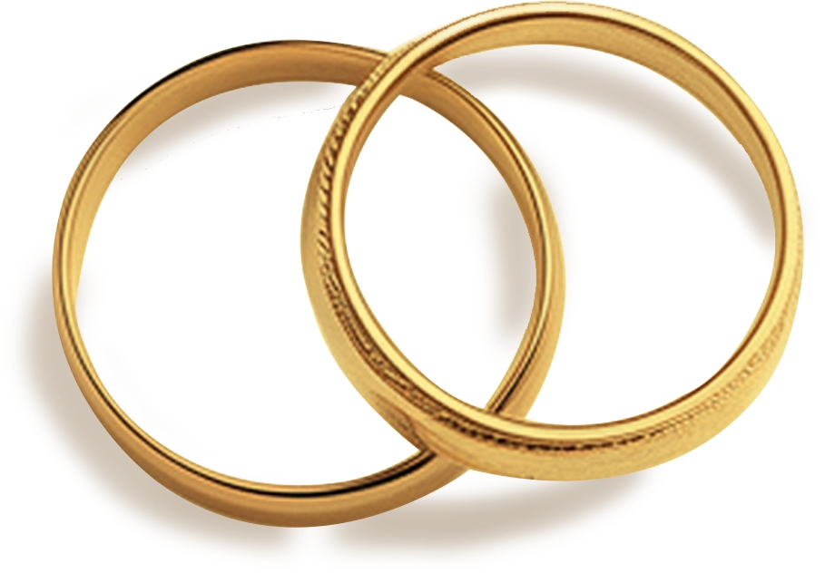

Applying God's Creation Truths to Your Marriage Today
God's design for marriage is woven into the very fabric of creation. This inventory walks you and your spouse through twelve foundational truths from Genesis 1–2, paired with honest discussion questions to help you grow together. There are no right or wrong answers — only an invitation to open, prayerful conversation.
Work through it together online, or download and print a copy to complete at your own pace with pen in hand.
Free resource · No account required
Applying God's Creation Truths to Your Marriage Today
God's design for marriage is woven into the very fabric of creation. This inventory walks you and your spouse through twelve foundational truths from Genesis 1–2, paired with discussion questions to help you honestly assess your marriage and grow together in light of those truths.
There are no right or wrong answers — only an invitation to open, prayerful conversation. Work through it at whatever pace feels right for you, one section at a time or all at once.
Two ways to use it: Complete it right here online together, typing your reflections as you go — or use the Print My Responses button at the bottom to download a clean copy you can work through on paper at your own pace.
"So God created mankind in his own image, in the image of God he created them; male and female he created them" (Gen. 1:27).
Women and men are created equally in the image of God. You have value because you are made in the very image of God. Neither the man nor woman is created more in God's image than the other. While sin has corrupted our basic nature, God commands us to view our spouses with respect and love as individuals made in His image.
What are some ways in which your spouse makes you feel honored as an individual—one made equally in God's image?
What are some ways in which you and your spouse are different? Do you value those differences? How do those differences get in the way of seeing each other as equals?
How do you affirm what your spouse does as your marriage partner? In what ways do you fail to honor your spouse as an equal made in God's image?
How good are you at listening? Do you dominate conversations with your spouse as if your views are more valuable? Do you listen in a way that communicates how you value your spouse and your spouse's opinions?
Think of someone you greatly respect. How do you treat that individual? Now compare how you treat that individual with how you treat your spouse. How do your actions and attitudes toward your spouse measure up?
"So that they may rule over the fish in the sea and the birds in the sky, over the livestock and all the wild animals, and over all the creatures that move along the ground" (Gen. 1:26).
God created woman and man in His image for a purpose. Under His overarching rule, they were to rule together over what God has created. Both the husband and wife share in both this responsibility and authority.
Where do you share responsibilities well in your marriage? How could you do better?
What different strengths do you bring as husband and wife? How do these differences equip you better as a couple to do what God has called you to do?
How would you describe your mission as a couple? Consider taking time to write down a mission statement and discuss your roles, together and individually, in that mission.
Where do you feel that there is an imbalance of responsibility, effort, or other areas of significance in your marriage? Where do you or your spouse often feel overburdened? How can you better share responsibilities in those areas?
In what areas do you and your spouse need to communicate better about how best to share responsibilities? How can you support each other better in those areas?
"God blessed them and said to them, 'Be fruitful and increase in number; fill the earth and subdue it'" (Gen. 1:28).
Children are a God-given blessing. While our culture often diminishes parenthood, the Bible ascribes great value to children. Not only are parents blessed by their children, but they also have a tremendous responsibility toward them. Parenthood goes beyond personal fulfillment.
If you have children, do you view them as a blessing or burden (or both)? How do you need to adjust your attitudes and actions to conform to God's view of children?
If you don't have children, do you want to become parents? Why or why not? What are good and godly reasons for wanting or not wanting to have children?
How are you affected by cultural influences that sometimes diminish the value of both children and parenthood? How do expectations of friends and family influence you?
How does "oneness" (or the lack of it) in your marriage affect your approach to having and raising children? How can working on your marriage make you a better parent?
Have you and your marriage partner discussed your approach to parenting? Do you make decisions together after thoughtful and prayerful discussions? What else can you do to be the parents God wants you to be?
"Then God said, 'I give you every seed-bearing plant on the face of the whole earth and every tree that has fruit with seed in it. They will be yours for food'" (Gen. 1:29).
God has blessed us and our marriages. In addition to establishing a beautiful design for marriage, he provides generously for our daily needs. We are not alone in our marriages. We can't "make" our marriages succeed on our own. We need God in our marriages.
How has God provided for you in marriage? Discuss examples of God's abundant provision.
Do you thank God for how He provides for you and your marriage? If not, how can you start incorporating that into your prayer time, both individually and together?
In what specific areas do you need to seek God's provision for your marriage?
How is your prayer life as individuals, as a couple, and as a family? Discuss with each other how you might improve your prayer life.
Do you spend time as a couple and as a family reading the Bible together?
"The Lord God said, 'It is not good for the man to be alone. I will make a helper suitable for him'" (Gen. 2:18).
While God's creation was "very good" (Gen. 1:31), it was "not good" for Adam to be alone. A husband and wife form a "oneness" relationship that, more than any other human relationship, can fill your deepest relational needs.
Do you value your marriage above your other relationships? Discuss specific ways in which you find relational fulfillment in your marriage.
What are some of your important human relationships other than marriage? Do you ever treat those relationships as more important than your marriage?
How can you show your spouse that your marriage is more important to you than any other human relationship?
Besides parenting, do you and your spouse have common interests and activities? Where could it be helpful to develop other shared interests and activities?
What gives you a strong feeling of "us" in your marriage (as opposed to "me" and "you")?
"Adam and his wife were both naked, and they felt no shame" (Gen. 2:25).
Before the fall, Adam and Eve could be fully open with each other without shame. Shame, fear, and guilt work against God's marriage design. Only Christ can truly take away our shame, fear, and guilt.
How do mutual respect and empathy facilitate honesty, openness, and transparency in your marriage? Where do you or your spouse feel a lack of respect and empathy?
When are you too eager to point out areas of weakness or failure in your spouse? How can you communicate acceptance and forgiveness, instead of judgment and condemnation?
Are you a person who invites transparency and honesty? What can you do to encourage your spouse to be more transparent and honest with you?
Where do you struggle with sharing openly with your spouse? How can you improve in those areas?
Realizing that you can't share every detail of your life with your spouse, what do you feel is the right balance in what to share?
"That is why a man leaves his father and mother and is united to his wife, and they become one flesh" (Gen. 2:24).
Marriage is the only "one flesh" relationship identified in the Bible. It is not a 50/50 relationship or a temporary arrangement. Instead, marriage is a lifelong "oneness" relationship. Oneness should be the central defining quality of your marriage.
How do you view marriage differently from other human relationships? What does it mean in practice for your marriage to be a unique "one flesh" relationship?
What are some of the practical expressions of oneness in your relationship with your spouse? Read Ecclesiastes 4:9–12 together and then discuss how it applies to your marriage.
What is God's role in creating oneness in marriage? How can God be the third strand who keeps your marriage strong?
Do you think that God's "one flesh" design for marriage means that you and your spouse must share all the same interests? How can it be healthy to have some different interests within marriage?
How can you grow in oneness with your spouse? How will you need to adjust your attitudes and actions?
"So they are no longer two, but one flesh. Therefore what God has joined together, let no one separate" (Matt. 19:6).
Because marriage is a "till death do us part" relationship, you need to work through your struggles rather than giving up when marriage is difficult—as it is sure to be at times.
Are you committed to marriage as a "till death do us part" relationship?
Read Matthew 19:3–9 together. What is God's view of divorce? How does it compare with your view?
How can you communicate to your spouse—in both word and deed—that you are committed to them and to your marriage? How can you help your spouse feel secure in your marriage?
What do you want to hear from your spouse that would help you feel secure in your marriage?
Do you believe that God has the best plan for your marriage? What are some of the specific benefits of a lifelong oneness relationship?
"But whoever is united with the Lord is one with him in spirit" (1 Cor. 6:17).
God's "oneness" plan for marriage is an exclusive, intimate relationship. While oneness involves more than sex, it clearly means that you should have sex only with your spouse. We should not go outside of our marriages to seek intimacy that is reserved for marriage.
How do you experience intimacy in each area of your marriage (emotional, relational, spiritual, physical, etc.)?
What positive steps can you take to grow intimacy in different areas of your marriage?
How should sexual intimacy build on and foster equality and mutual respect?
Why is sexual exclusivity so important to the "oneness" marriage relationship established by God?
Read 1 Corinthians 7:3–5 together. What does it mean in practice for a husband to give his body to his wife, and for a wife to give her body to her husband?
"Husbands, love your wives, just as Christ loved the church and gave himself up for her… In this same way, husbands ought to love their wives as their own bodies" (Eph. 5:25, 28).
Christ is our supreme example of sacrificial love. A husband's sacrificial love and servant leadership are critical to correcting the problem of competition for control and restoring God's creation design for marriage.
Why is sacrificial love so important to restoring God's creation design for marriage? How does sacrificial love help address the problem of competition for control?
What is the difference between unhealthy rule and servant leadership? How can a husband lead his family in love without being domineering and controlling?
What does the right balance look like in your marriage? Husbands, what does it look like for you to be a servant leader who loves your wife like your own body?
How does Christ's example of sacrificial love show husbands how to love their wives? Consider not only how Christ gave up His life for us, but also how He cared and served on a daily basis.
What is the relationship between a husband's sacrificial love and a wife's submission? If you display Christ-like love in your marriage, how will it help your wife fulfill her calling?
"Wives, submit yourselves to your own husbands as you do to the Lord. For the husband is the head of the wife as Christ is the head of the church" (Eph. 5:22–23).
Women and men are made equally in God's image. The Hebrew word for "helper" points to a position of strength, not weakness. Much as sacrificial love is a cure to the husband's unhealthy "rule," so submission is a cure to the wife's unhealthy desire to control her husband.
What is your reaction to the word "submission"? How does the word make you feel? What is our culture's reaction to it?
How does your perception change when you consider that Christ is the supreme example of submission? How does your perception change when you consider the many passages that instruct all believers to submit to each other?
Why does God view submission as a positive quality—indeed, an essential building block for all godly relationships?
Wives, why is a wife's submission particularly important in marriage? How does it help correct the unhealthy desire to control your husband that was part of the curse?
How does submission work cooperatively with the Bible's instructions that husbands love their wives sacrificially? Does submission appear desirable when you consider Christ's example and how it helps cultivate a husband's sacrificial love?
"'The two will become one flesh.' This is a profound mystery—but I am talking about Christ and the church" (Eph. 5:31–32).
A marriage based on God's good plan provides a glimpse into the mystery of our relationship with God. Of all human relationships, marriage should have the deepest spiritual significance. You should have a measure of awe about your marriage.
How does your marriage reflect the grace, mercy, and forgiveness we see in God's relationship with us?
How can your marriage help your children and others discover something about their wonderful and mysterious relationship with God?
What can your marriage teach you about your relationship with Christ? For example, what do the creation truths of oneness and exclusivity teach you about your relationship with Christ?
In what specific ways do you give priority to your marriage above all other human relationships?
While marriage provides a glimpse into our relationship with Christ, Christ alone (not your spouse) is your Savior. How do you need to be careful not to substitute your spouse for Christ?
Responses are private to this session. Use "Email My Answers" or "Print" to keep a copy.
You've worked through all twelve creation truths. This inventory isn't the end—it's the beginning of an ongoing conversation. Return to these questions as your marriage grows and changes.
"Two are better than one… A cord of three strands is not quickly broken."
— Ecclesiastes 4:9, 12